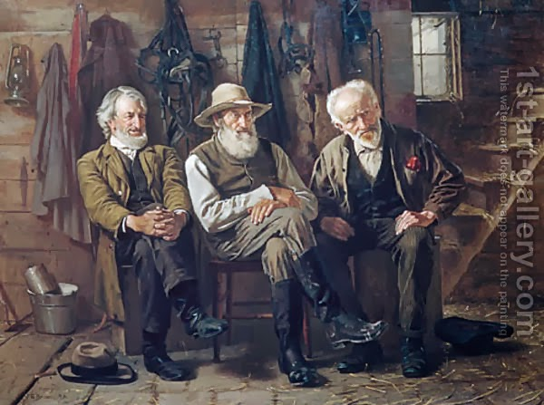

Yoma 73 - Urim VeTumim
The same eight garments of the High Priest that were discussed so far were also needed when consulting Urim VeTumim. Incidentally, the Kohen appointed for battle, one who would go with the Jews to war - also wore the same eight garments. After the war, he continued to serve in the Temple in the same outfit. Others say that he does not serve in the Temple at all. We cannot permit him to be like the High Priest, because the real High Priest will feel bad about it. Neither can he wear can the garments of a regular Kohen, because of the rule that they only raise in the level holiness, but never bring down.
Back to Urim VeTumim, what was it? Some say that inside the breastplate of the High Priest they put a piece of parchment with the name of God written on it, others - that it refers to the precious stones on the breastplate. The High Priest would be wearing it, the king would ask a question, and the answer would be formed by the letters protruding forward. Some say that only a worthy High Priest was able to see them protrude, and then interpreted the answer.
Art: To Decide the Question By John George Brown